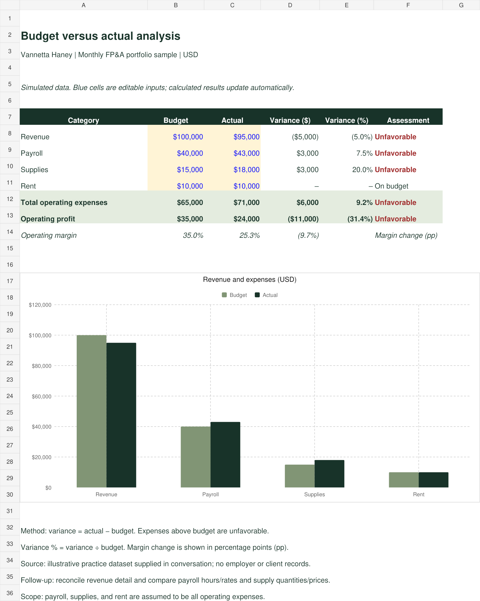

One financial question.
Excel and SQL.
A monthly budget-versus-actual analysis presented as an editable Excel workbook and a reproducible SQL project. Explore the calculations, inspect the source data, and download the working files.
Personal portfolio samples using simulated data. These examples do not represent employer or client results.
Explore ExcelExplore SQLBudget versus actual workbook.
Change the highlighted budget and actual inputs to see dollar variances, percentage variances, assessments, operating profit, and margins recalculate.
- Editable inputs are visually separated from formulas.
- Revenue and expense variances use the appropriate favorable or unfavorable direction.
- A native Excel chart stays linked to source cells.
- Zero-budget percentages display “n.a.” rather than a misleading zero.
Verification: baseline totals, changed revenue, favorable status, zero-budget handling, formula error scan, and rendered layout checked.

Actual workbook preview. Open the image to see the full worksheet and chart.
From transactions to financial insight.
Seven simulated transactions and four budget lines become a reconciled category report, a profit comparison, and a ranked view of unfavorable contributors.
Includes setup, analysis, diagnostic SQL, instructions, and baseline CSV outputs. Runs in SQLite 3.25+.
WITH actuals AS (
SELECT month, category_id,
SUM(amount) AS actual
FROM transactions
GROUP BY month, category_id
)
-- Aggregate first; then join to plan.
SELECT b.month, c.category_name,
b.amount AS budget,
a.actual,
a.actual - b.amount AS variance
FROM budgets b
JOIN categories c
ON c.category_id = b.category_id
LEFT JOIN actuals a
ON a.month = b.month
AND a.category_id = b.category_id;Core aggregation and join pattern. Download the full query for source-key coverage, missing-data handling, profit calculations, and window functions.
Executed and checked: source reconciliation, expected totals, duplicate key rejection, missing actuals, explicit zero actuals, zero budget, and actual-only categories.
The numbers reconcile.
| Category | Budget | Actual | Variance | Variance % |
|---|---|---|---|---|
| Revenue | $100,000 | $95,000 | ($5,000) | (5.0%) |
| Payroll | $40,000 | $43,000 | $3,000 | 7.5% |
| Supplies | $15,000 | $18,000 | $3,000 | 20.0% |
| Rent | $10,000 | $10,000 | $0 | 0.0% |
| Operating profit | $35,000 | $24,000 | ($11,000) | (31.4%) |
Variance = actual − budget. Payroll, supplies, and rent are assumed to be all operating expenses. Lower revenue and higher expenses are unfavorable.
Management interpretation
Operating profit is $11,000 below budget. Revenue is $5,000 lower and operating expenses are $6,000 higher. Payroll and supplies each exceed budget by $3,000; rent is unchanged. These figures identify the contributors but do not establish causes. Next, reconcile revenue detail and examine payroll hours/rates and supply quantities/prices.
Read the SQL methodology and run instructions ↗